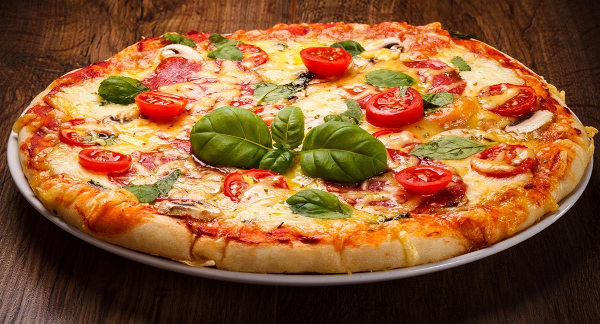
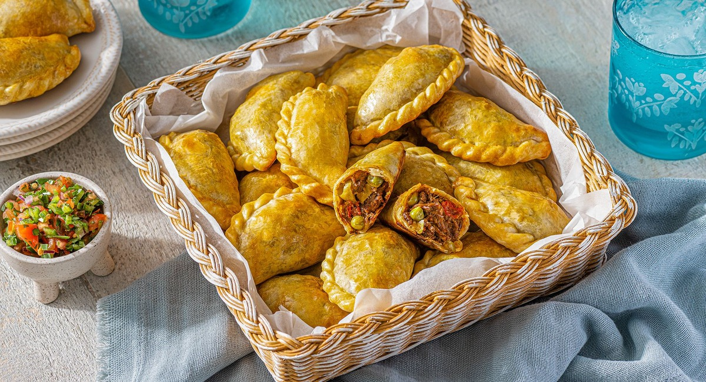

ESPECIALIDAD DE LA CASA: PIZZA MARGARITA

Recetas Recientes

Pizza Margarita
DestacadoLa clásica pizza italiana con tomate, mozzarella y albahaca fresca.
Ver Receta →Pastas Caseras
VegetarianaDeliciosas pastas hechas en casa con salsa boloñesa tradicional.
Ver Receta →Flan con Dulce de Leche
Sin LactosaEl postre argentino por excelencia, cremoso y dulce.
Ver Receta →
Empanadas Salteñas
PopularEmpanadas tradicionales bolivianas con relleno jugoso de carne.
Ver Receta →Destacados de la Semana


Algunas de nuestras Categorías
Nuestras fuentes de receta

Las recetas de esta página nacen de experiencias, conversaciones e ideas creativas para compartir sabores simples y deliciosos.
En qué nos basamos para cocinar
Creemos que cocinar bien puede ser simple, saludable y delicioso. Nuestras recetas combinan ingredientes accesibles, técnicas sencillas y el placer de compartir cada comida.